Comply to Connect (C2C) is a critical program, especially for the Department of Defense (DoD), serving as a bridge to Zero Trust access. It automates the process of controlling which devices are allowed to authenticate and connect to the DoD Information Network (DoDIN). C2C ensures that devices are automatically remediated if found non-compliant and provides comprehensive reporting and visibility throughout the process. This program lays the groundwork for Zero Trust by establishing inventory and endpoint health as foundational elements, enabling consistent policy enforcement and behavior attribution to users and devices.
Cisco’s Identity Services Engine (ISE) plays a central role in C2C by providing:
This structured approach not only meets C2C requirements but also forms the foundation for a Zero Trust architecture by enabling continuous trust verification and dynamic policy enforcement.
Monitoring and reporting are essential components of both Comply to Connect and Zero Trust frameworks. Continuous visibility into all devices and their compliance status allows organizations to:
By integrating monitoring and reporting, organizations can ensure that trust is continuously verified, risks are minimized, and security policies are enforced consistently across all network access points, which is fundamental to the effectiveness of Zero Trust security. Splunk is a critical component in supporting Comply to Connect (C2C) and Zero Trust frameworks by delivering comprehensive monitoring and reporting capabilities. It provides continuous visibility across users, devices, and infrastructure, enabling real-time verification of security posture and compliance. By integrating data from diverse sources, Splunk offers advanced analytics and machine learning to detect anomalies and prioritize responses effectively. Its automation and orchestration features reduce manual effort and accelerate incident handling, ensuring enforcement of zero trust policies. Additionally, Splunk’s customizable reporting supports regulatory compliance requirements such as FedRAMP and DoD mandates. With scalable deployment options across on-premises and cloud environments, Splunk enhances security operations by empowering teams to maintain continuous trust and resilience within Zero Trust architectures. Together, Cisco and Splunk deliver the visibility, analytics, and automation essential for effective monitoring and reporting in C2C and Zero Trust implementations.
This document assumes that following is already scoped/sized and installed in the environment.
The following communications are required for the Application and TA to generate and gather the data required.
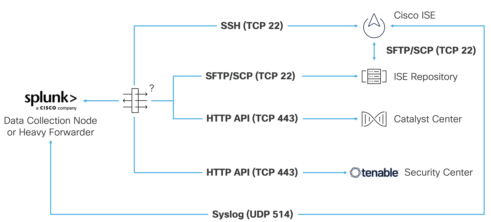
Cisco Enterprise Networking for Splunk Platform Application
https://splunkbase.splunk.com/app/7539
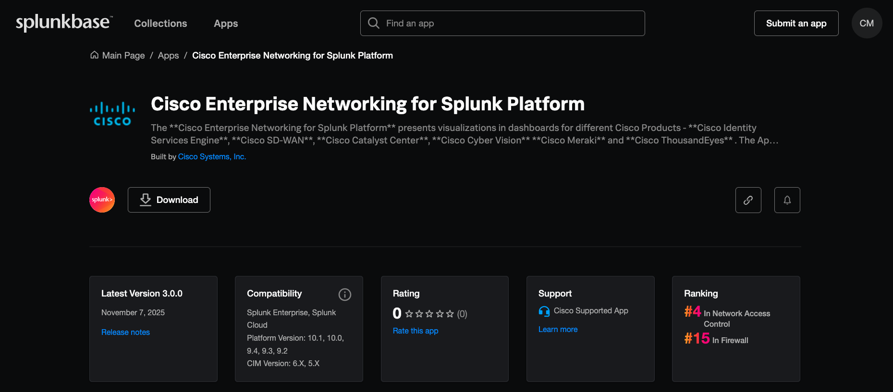
Cisco Catalyst Add-on for Splunk
https://splunkbase.splunk.com/app/7538
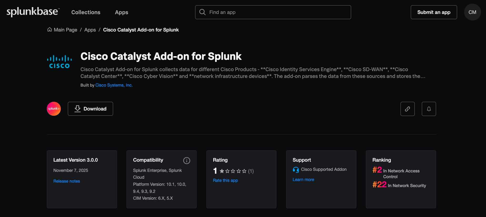
Tenable Add-On for Splunk
https://splunkbase.splunk.com/app/4060
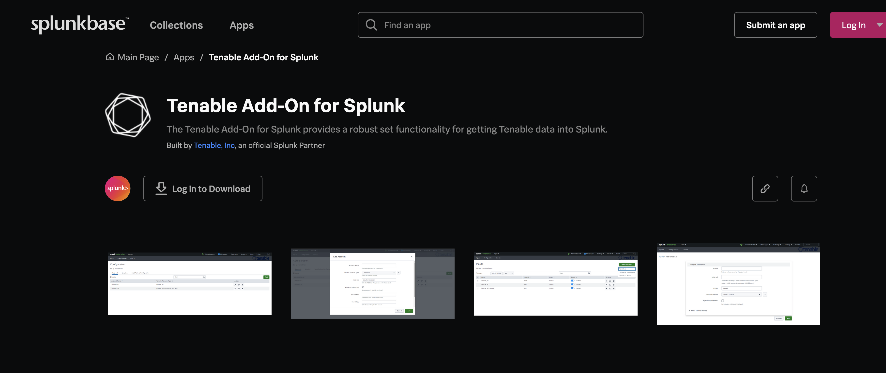
Open a web browser and go to http://<IP|Hostname>:8000
Navigate to Apps > Manage Apps
Click "Install App From File" on the top right, select the downloaded app bundle and click Upload
Some ISE Syslog messages are over the Splunk default 10,000 byte length. Therefore the Truncate length must be set to 20,000 to ensure that logs are not truncated before all the data elements are indexed.
vi /opt/splunk/etc/apps/cisco-catalyst-app/local/props.conf
[cisco:ise:syslog]
TRUNCATE = 20000
On the ISE Admin UI navigate to Administration > System > Logging > Remote Logging Targets
Click "Add"
Configure the Splunk Reporting Destination
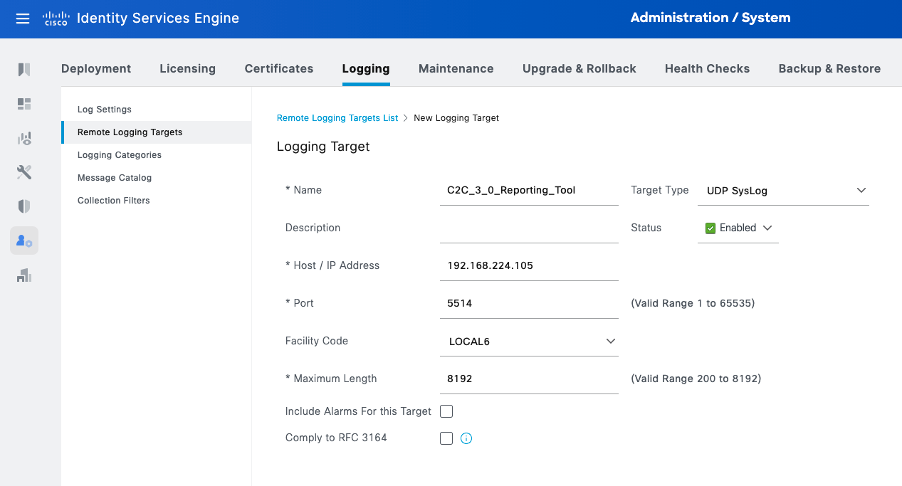
Navigate to Logging Categories
The required logging categories are:
To add the Logging Target to the Category, click the Category Name, Select the Target from the "Available" column and click the ">" icon to move it to the "Selected" column.
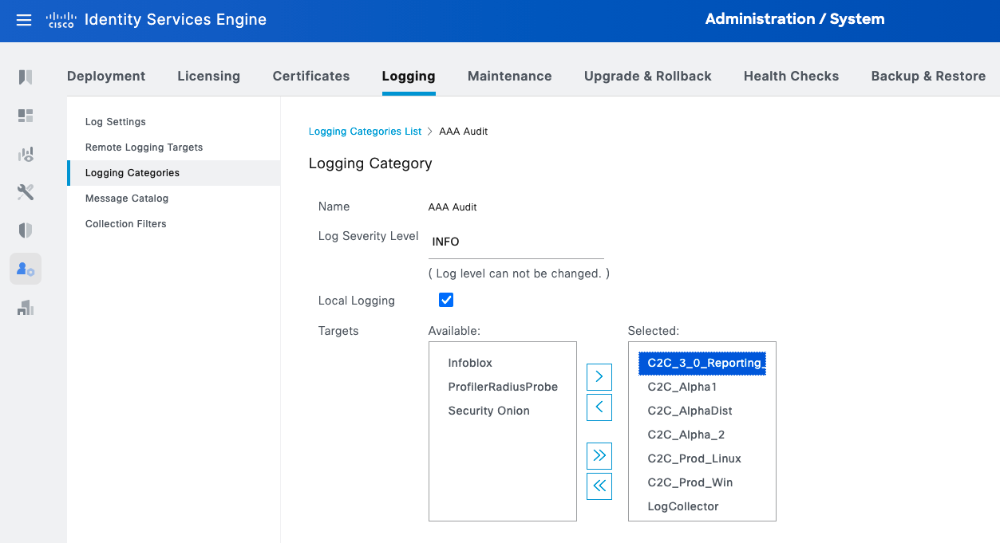
Repeat the above for all of the logging categories. After complete you can filter based on your Target name to confirm.
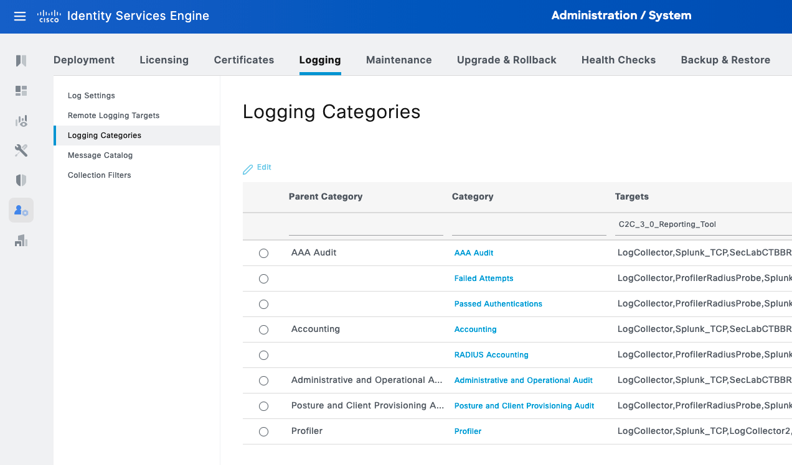
For Analytics reports to be successfully gathered from ISE into the reporting tool it will require the names and access to a local disk and remote SFTP repository. To configure these in ISE, navigate to Administration > System > Maintenance and select Repository in the menu.
Click "Add" to configure the local disk repository if one is not already defined
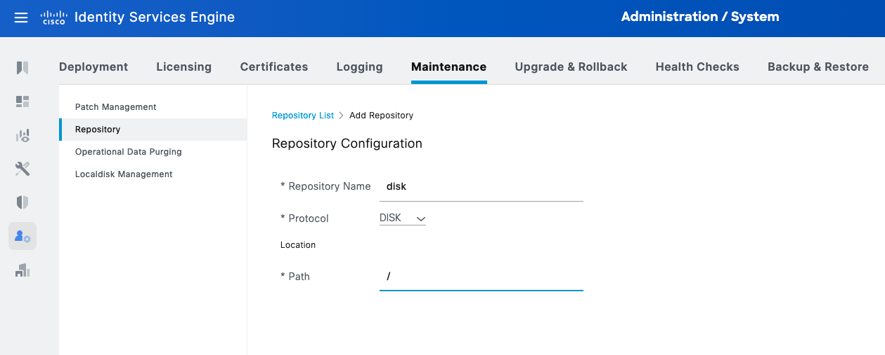
Click "Add" to configure an SFTP repository if one is not already defined
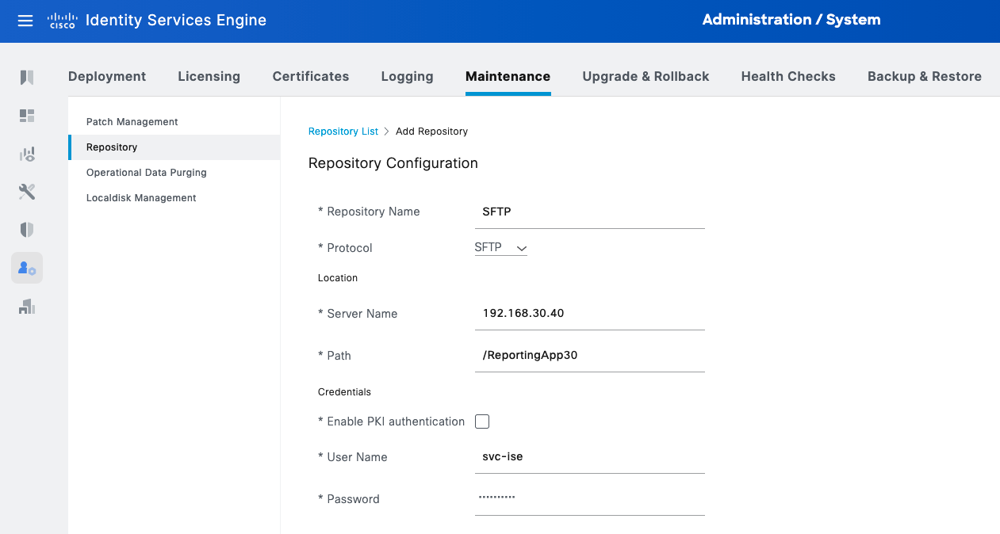
When you click "Submit" for the SFTP repo you will be prompted to ensure that the Crypto Host Key must be added using the CLI. This will be covered in the CLI account creation steps below.
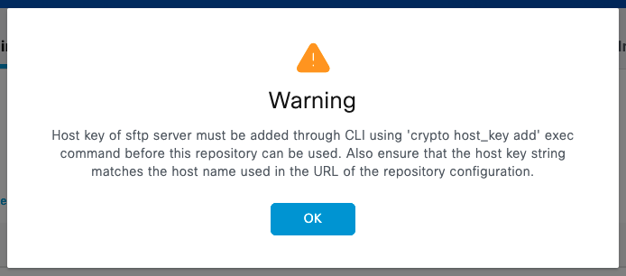
You will need to create a dedicated CLI account on the ISE PAN node to use with the reporting app for running and moving the reports to the repository for processing.
Log in to your ISE primary Admin node with your existing credentials
Execute the following to create the account with your desired username and password.
username reporting password plain ************* role admin
(Special characters may require double quotes ").
Note: The password will be required to be changed on the first login so don't use your final desired password until the change password prompt is presented.
After the user account is created we will need to log in using SSH with that user account to complete the SFTP Host Key configuration.
As the new admin user execute the following to save and validate the host key addition:
crypto host_key add host \<IP\\Hostname\>
You should see "host key fingerprint added" or run:
show crypto host_keys
OR
show repository \<SFTPrepoName\> to validate that you can successfully connect to the repository.
The C2C Reporting App pulls the result of native Catalyst Center reports to present dashboards for network device compliance. The following screenshots show the required reports. The TA will require an API account with permissions to pull the reports and the report names will also be required.
Navigate to System > Users & Roles > User Management and click "Add"
Create the User Account with minimum of OBSERVER-ROLE for API collection of the reports.
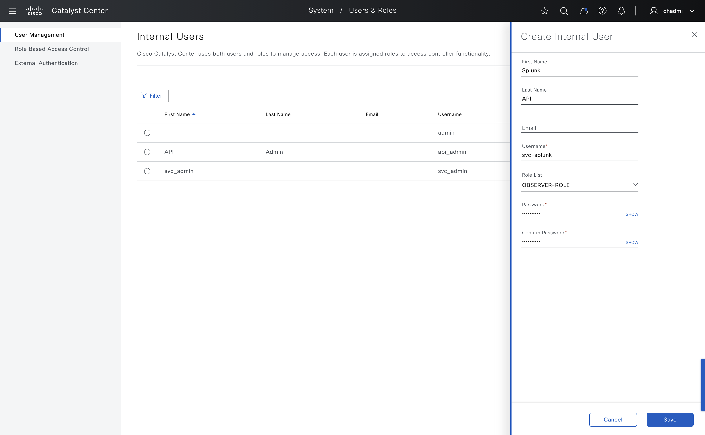
Note: External Authentication is also usable with role assignment.Navigate to Reports > Report Templates > Compliance and click "Generate"
Finish the Report wizard with the following inputs:
Navigate to Reports > Report Templates > Inventory and click "Generate" for the "All Data" report
Finish the Report wizard with the following inputs:
Take note of the Report Names as they will be entered into the Add-on later in this guide
In Splunk we will need to configure indexes for the data collection. Avoid using the "Main" index. Individual indexes provide separate retention, access, and meaningful naming in the case that data needs to be purged from the system.
For the reporting app there will be:
In this example we will use separate indexes for each source.
To configure the indexes go to your Splunk instance and select Settings > Indexes
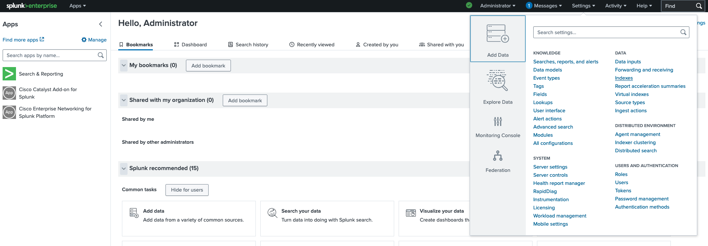
Click "New Index" and give it a name and "Max size" values (Size is dependent on your environment)
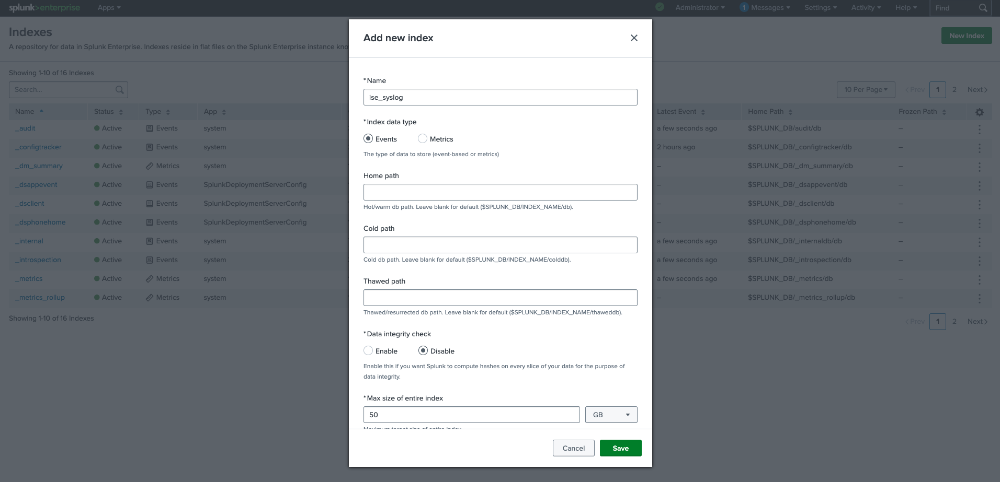
On the Splunk UI navigate to the Cisco Catalyst Add-on for Splunk and click on "Configure Application" on the Identity Services Engine (ISE) tile.
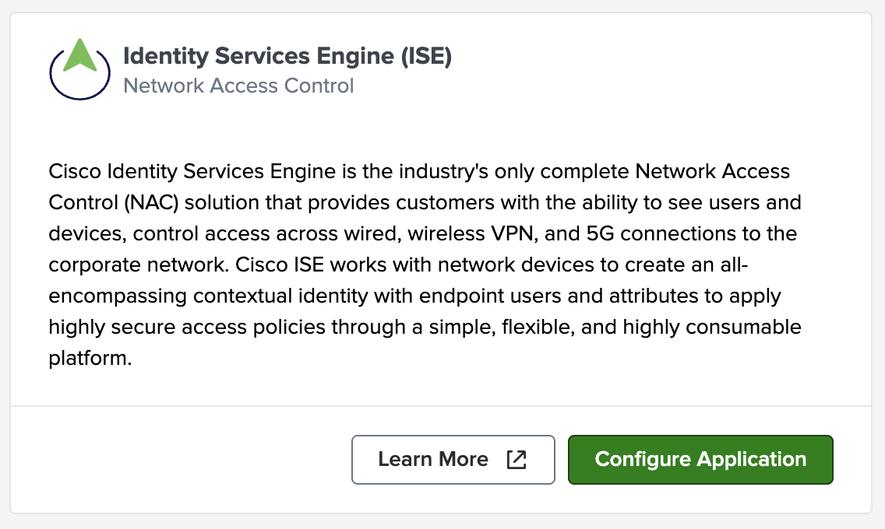
Once in the ISE Application click on the "Configuration" tab and click "Add"
In the pop up change the "Account Type" to Analytics Reports and input the requested parameters.
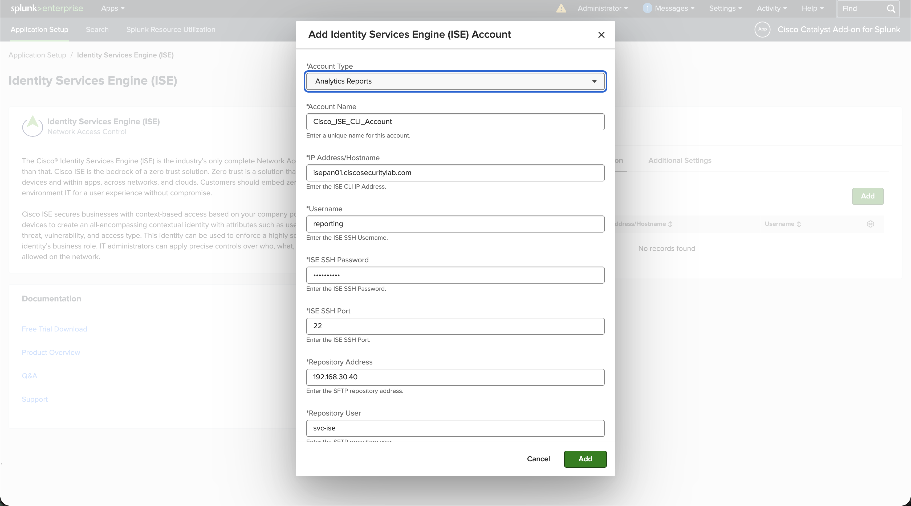
Navigate to the "Inputs" tab and select the "ISE Analytics Reports" input from the dropdown and input the requested parameters.
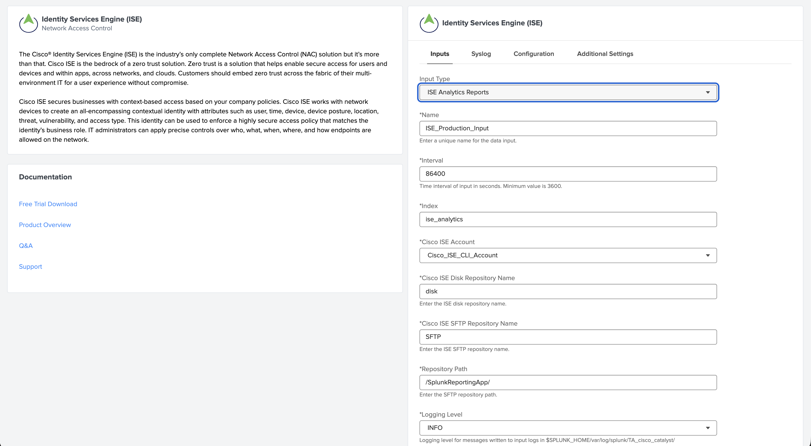
Navigate to the "Syslog" tab and input the Syslog protocol and port configured on the ISE Syslog Target step and select the Index created for Syslog input.
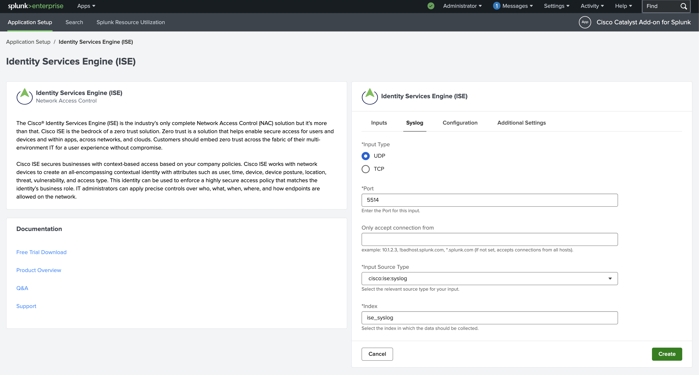
On the Splunk UI navigate to the Cisco Catalyst Add-on for Splunk and click on "Configure Application" on the Catalyst Center tile.
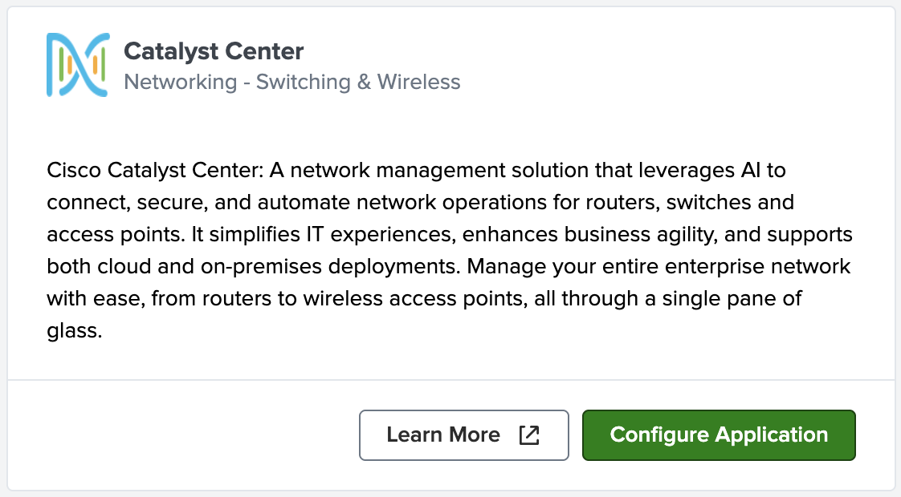
Navigate to the "Configuration" tab and click "Add"
In the pop up input the API credentials for Catalyst Center
Navigate to the "Inputs" tab and select the "Input Type" dropdown and select "Reports" and input the requested parameters.
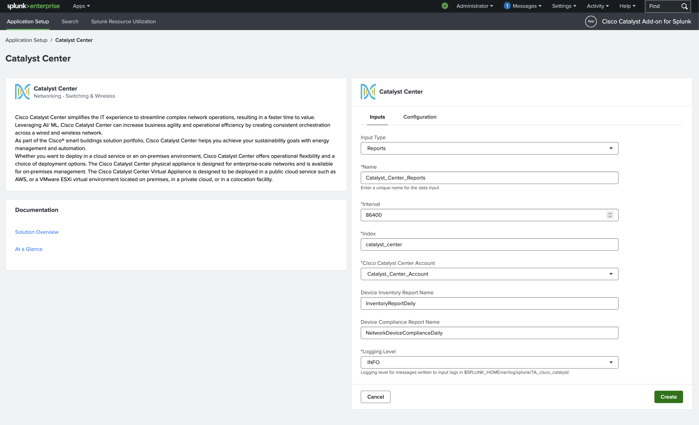
On the Splunk UI navigate to the Tenable Add-on for Splunk. Configure the Add-On for Tenable Security Center using the public Tenable Documentation.
A search macro is a reusable building block of Search Processing Language (SPL). Think of it as a "shortcut" or a "variable" that stores a complex string of code, a specific filter, or a set of instructions. Instead of typing the same code into dozens of different saved searches, you define it once in a macro and reference it elsewhere.
In Splunk, macros are always referenced by surrounding the macro name with backticks, like this:
`cisco_catalyst_app_index`
Centralized Management (The "Change Once, Update Everywhere" Principle)
The primary benefit of macros is maintenance. For example, if a Cisco ISE logs are moved from an index named old_index to new_index, you don't have to manually edit 50 different saved searches. You simply update the cisco_catalyst_app_index macro once, and every search using that macro is instantly updated.
Simplifying Complex Logic Macros can hide "ugly" or complex code—such as long Regular Expressions (regex) used for parsing security posture—making the actual saved searches much easier to read and audit.
`cisco_catalyst_posture_regex_malware`.Ensuring Consistency
Macros ensure that every dashboard and report in an app is looking at the exact same data. By using a macro like cisco_catalyst_app_sourcetypes, you guarantee that the "Total Endpoint Count" dashboard and the "Compliance Report" are both querying the same set of devices.
Environment Customization
Macros allow a single Splunk App to be "portable." When the Cisco Catalyst App is installed in a new environment, the administrator uses the macros.conf file to "tune" the app to the specific network without breaking the underlying search logic.
In the Cisco Catalyst App, the macros generally fall into three functional types:
cisco_catalyst_app_index
*). For better performance and security, change this to specific indexes.
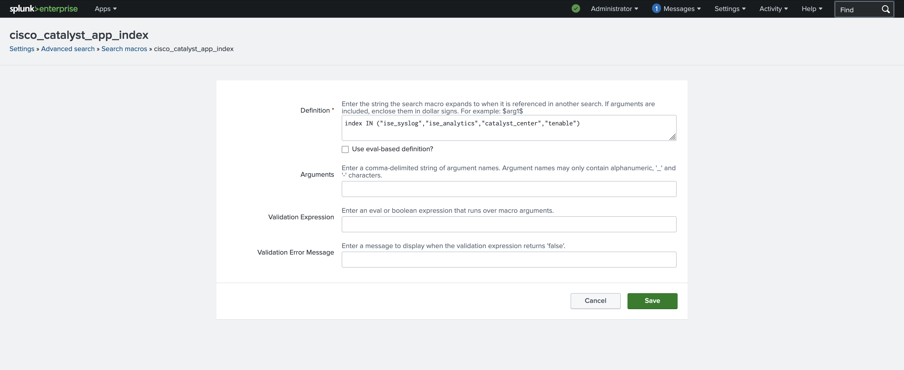
cisco_catalyst_app_sourcetypes Optional
cisco:ise:custom), add it to the list.
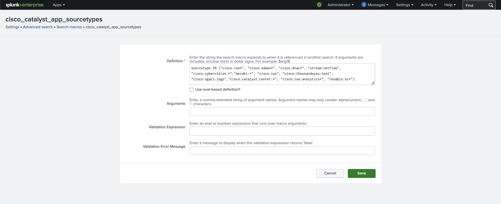
summariesonly Optional
| tstats.true to significantly speed up dashboards if Data Model acceleration is turned on.
Definition = summariesonly=true
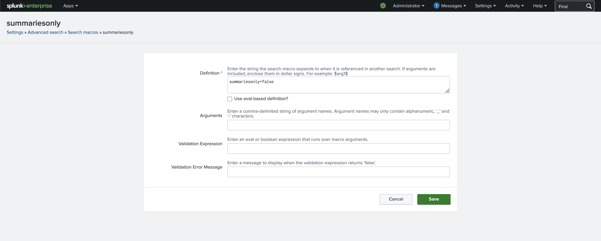
These macros use Regular Expressions to parse the results of security checks from raw ISE syslog messages in MESSAGE_CODE 87000 & 87001.
cisco_catalyst_posture_regex_encryptcisco_catalyst_posture_regex_firewallcisco_catalyst_posture_regex_malwarecisco_catalyst_posture_regex_patchcisco_catalyst_posture_regex_USBcisco_catalyst_ise_posture_report_v2.PostureReport values come in from Syslog, 1 for each Macro. If the policies are named CORP_Antivirus instead of C2C_AntiMalware, the regex must be updated. It is recommended to Not change the extracted variable name enclosed in the (?<>)
definition = "CORP_Antivirus_\w+_Policy\\\;(?<C2CMalwareResult>[\w]*)"PostureReport key like the below the Regex may look more like C2CR-WIN-AM:\w+:(?<C2CMalwareResult>w+)cisco_catalyst_profiler_summary_v4ImplementationStep1Metric2cisco_catalyst_010_reporting_uscybercom_device_category_step_1.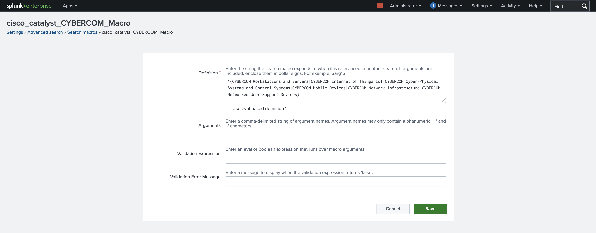
cisco_catalyst_profiler_summary_v4ImplementationStep1Metric2.These macros provide the "Header" information for compliance reports.
cisco_catalyst_reporting_ownercisco_catalyst_reporting_AOcisco_catalyst_reporting_deployment_id.cisco_catalyst_report_all_step_2.Example Owner to Department of Transportation.B9EJMA12345 to the actual site deployment ID.cisco_catalyst_step_4_authentication_details.cisco_catalyst_step_4_authentication_details.These macros define the specific Tenable Plugin IDs used to extract hardware and software details.
cisco_catalyst_windows_installed_plugincisco_catalyst_windows_disk_info_plugincisco_catalyst_windows_comp_prod_info_plugincisco_catalyst_windows_network_int_plugincisco_catalyst_windows_memory_info_plugincisco_catalyst_windows_processor_info_plugincisco_catalyst_windows_TPM_info_pluginother (Linux/Unix) versions.cisco_catalyst_windows_os_details_v2, cisco_catalyst_other_hardware_details_v2).definition = Cisco_Catalyst_Dataset.Cisco_Catalyst_Tenable.tenable_plugin_id="999999"If you are planning to use the GeoStats Maps view on the Dashboard Overview tab the Splunk Lookup Table will need to be updated with your ISE Network Device Group names and a latitude and longitude value for accurate placement.
To properly place the counts on the geo-stats map you will need the Network Device Group
The following is an example of how to edit the lookup file located at:
/opt/splunk/etc/apps/cisco-catalyst-app/lookups/cisco_catalyst_ise_location_mapping.csv
Location,lat,lon
Location#All Locations#HerndonLab#Lincoln County NV,37.2343,-115.8066
Location#All Locations#HerndonLab#Ashburn,39.0438,-77.4874
Location#All Locations#HerndonLab#Denver,39.7392,-104.9903
Location#All Locations#HerndonLab#Honolulu,21.3099,-157.8581
Location#All Locations#HerndonLab#Tempe,33.4255,-111.9400
Location#All Locations#HerndonLab#Washington DC,38.9072,-77.0369
Location#All Locations#Home Office,51.5072,-0.1180
If you don’t wish to plot individual Device Groups you can use the Wildcard option detailed below. Update the Lookup Table to reflect the single LAT/LON that you want all devices associated with:
/opt/splunk/etc/apps/cisco-catalyst-app/lookups/cisco_catalyst_ise_location_mapping.csv
Location,lat,lon
Location#All Locations*,37.2343,-115.8066
The Cisco Enterprise Networking for Splunk Platform App has been updated to include additional dashboards and views for endpoint compliance and reporting. Many of these views have been tailored to specific requirements of the DoW Comply to Connect (C2C) program while also having many uses in other customer segments as well. All of the data inputs configured above are required for the Analytics Reports and Detailed Reports navigations within the app.
This view provides high level information on Activity Location, Device Classification, Authentication, Device Compliance, and Infrastructure.
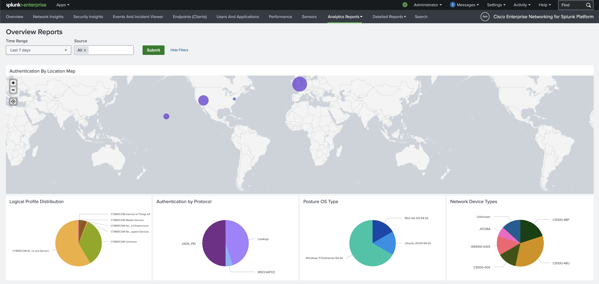
This view provides total count of Compliant/NonCompliant devices and the specific requirements that are failing from Cisco ISE Syslog and Analytics Report Inputs. Additionally, it provides a trend of compliance over time and details of compliance for every device found on the network. All failing devices are brought to the top of the list for easy identification while the list is also searchable using device MAC address.
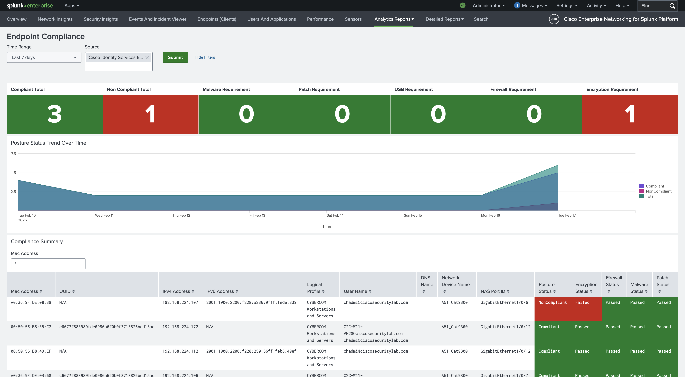
This view provides Network Device Inventory and Compliance with specifics from Cisco Catalyst Center Reports Inputs. All devices Cisco & Third party that are managed or monitored with Cisco Catalyst Center will be shown here.
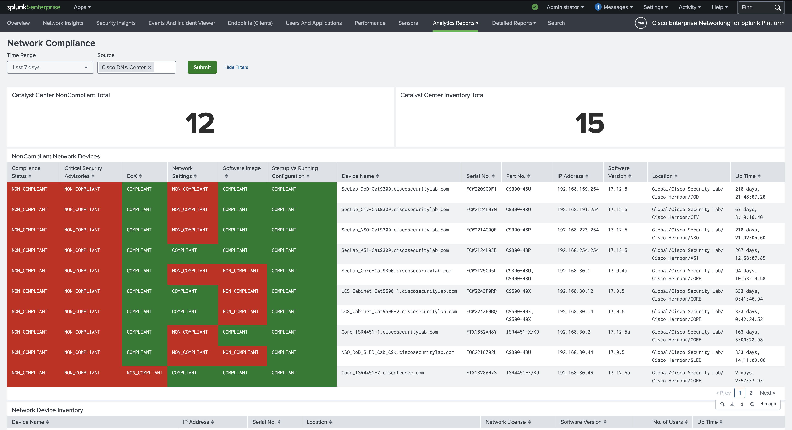
This view is the output of the master report that runs on an interval to gather & correlate all the data elements required for reporting. This report will show every endpoint and all of the data elements that have been gathered for each.
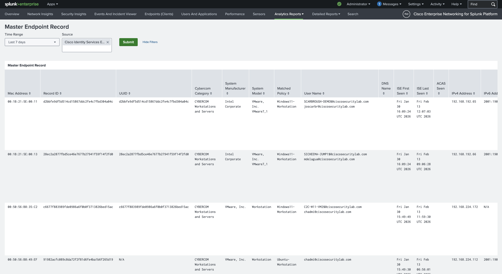
This report provides views of the C2C 0.1.0 (Device Categorization) & 0.1.1(Operating System Summary) requirements.

This report provides views of the C2C 0.2.0-0.2.24 requirements. This includes Discovery, Manageability, MAB vs 802.1X, Compliance, and other elements.
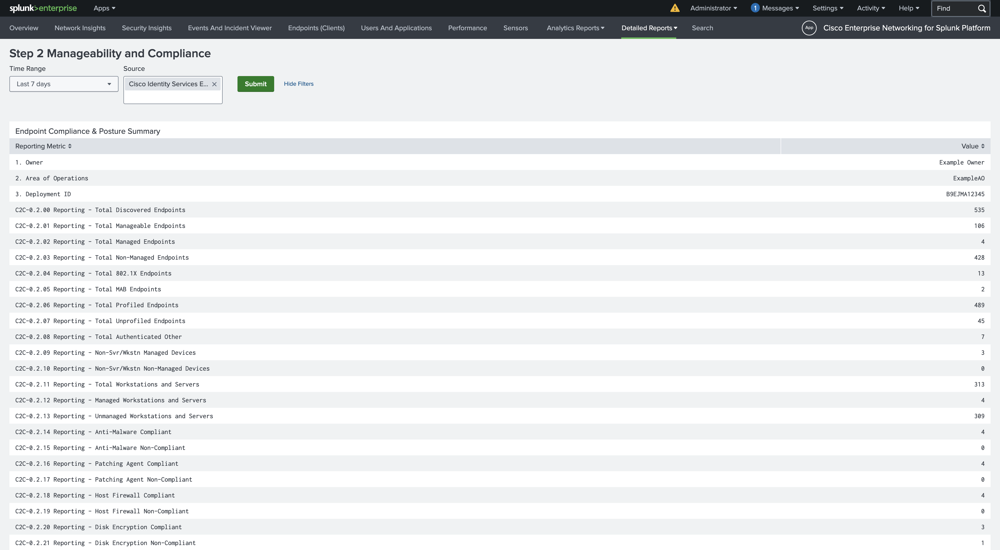
This report provides results of remediation attempts on all endpoints that required any attempt at remediation.
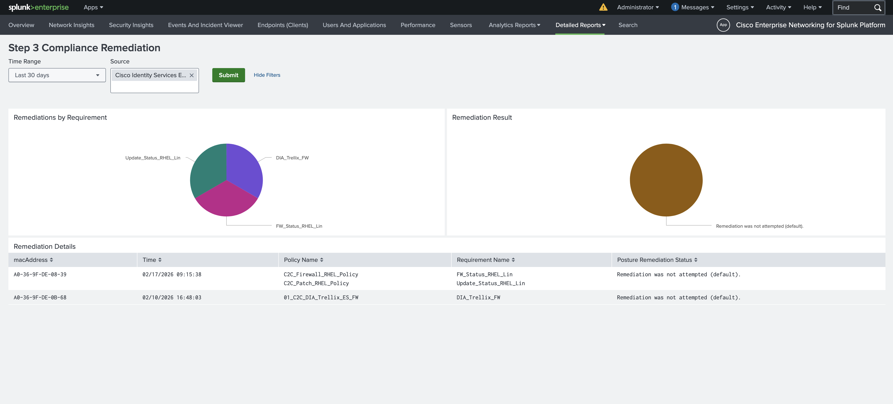
This report provides Identity and Credential Access Management (ICAM) data for every endpoint that uses/used credentials to access the network. It presents the access results, number of attempts over time and identity details where available.
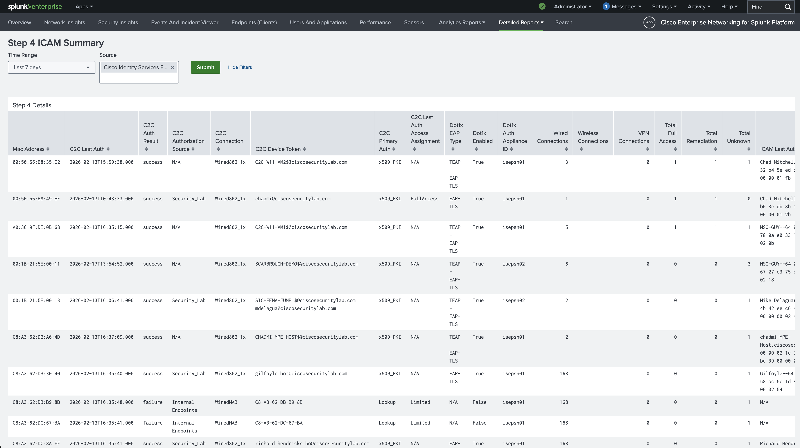
This view provides KPI metrics based on the C2C program office Goals and Calculations.
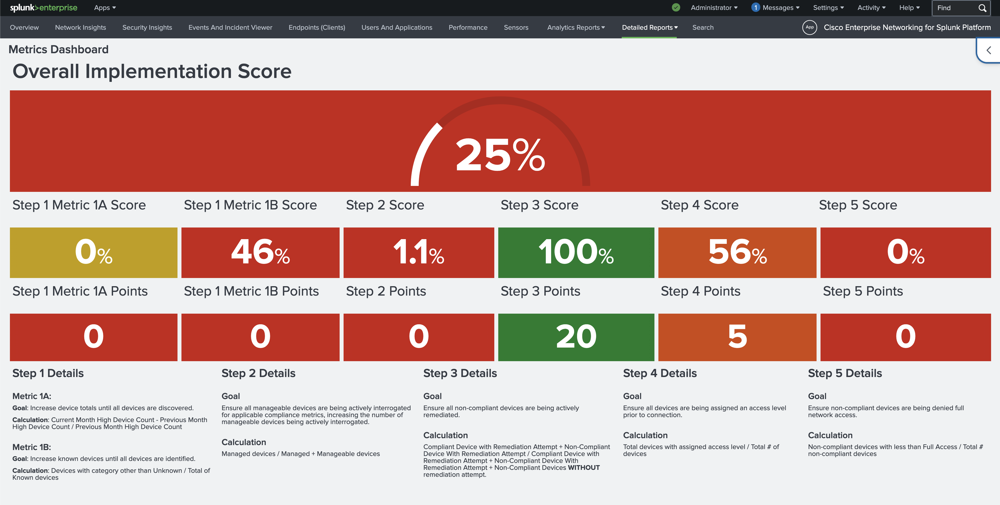
mkdir -p /opt/splunk/etc/apps/cisco-catalyst-app/local/data/ui/nav/
cp /opt/splunk/etc/apps/cisco-catalyst-app/default/data/ui/nav/default.xml /opt/splunk/etc/apps/cisco-catalyst-app/local/data/ui/nav/default.xml
vi /opt/splunk/etc/apps/cisco-catalyst-app/local/data/ui/nav/default.xml
<nav search_view="search">
<collection label="Analytics Reports">
<view name="overview_analytics_reports" default='true' />
<view name="endpoint_compliance_analytics_reports" />
<view name="network_compliance_analytics_reports" />
<view name="master_endpoint_record_analytics_reports" />
</collection>
<collection label="Detailed Reports">
<view name="step_1_report" label="Step 1 Device Classification"/>
<view name="step_2_report" label="Step 2 Manageability and Compliance"/>
<view name="step_3_report" label="Step 3 Compliance Remediation"/>
<view name="step_4_report" label="Step 4 ICAM Summary"/>
<view name="metrics_dashboard" label="Implementation Metrics"/>
</collection>
<view name="search"/>
</nav>
Note: If you wish for the default page to be other than the Overview, move the default='true' to the view that you want to be the default.
Using your web browser input http/s://<IPAddress/Hostname>:8000/debug/refresh and then click the Refresh button.
Once the process completes reload browser where the App is loaded and the nav structure should have changed.
cisco_catalyst_all_macAddresses
eval/coalesce (merges MACs from ISE Analytics Reports, Tenable, and Syslog)replace/upper (standardizes MAC format to XX:XX:XX...)append block here to ensure those devices are included in the master inventory.cisco_catalyst_ise_passed_authn_v3
rex (extracts MACs from cisco_av_pair)
* coalesce (prioritizes endpoint MAC over VPN MAC)rex field to point to that attribute.cisco_catalyst_ise_hardware_report_v1
eval (e.g., memorysize*1024 to normalize units)
* round (formats disk space strings)cisco_catalyst_profiler_summary_v4
makemv (handles multi-value profiles)
* mvfilter (filters using macro to show only relevant logical profiles)cisco_catalyst_CYBERCOM_Macro.cisco_catalyst_ise_accounting_v2
replace (normalizes MAC format)cisco_catalyst_ise_posture_report_v2
rex (uses 5 posture macros to extract results)87000 or 87001.cisco_catalyst_coams_by_device
rex (extracts numeric IDs from display names)
* ltrim (removes leading zeros)These searches (14 total) use tstats to query the Tenable datamodel and rex to parse the plugin_text field.
Windows Searches:
cisco_catalyst_windows_os_details_v2: Extracts Windows OS name, version, vendor, and architecture from Tenable plugin text.cisco_catalyst_windows_disk_details_v2: Extracts total and free disk space for Windows endpoints.cisco_catalyst_windows_hardware_details_v2: Extracts BIOS GUID, Vendor, Product, and Serial Number for Windows machines.cisco_catalyst_windows_interface_details_v2: Extracts NIC (Network Card) manufacturer and product names.cisco_catalyst_windows_memory_details_v2: Extracts total physical memory (RAM) and converts it to MB.cisco_catalyst_windows_processors_details_v2: Extracts CPU version, count, and core counts.cisco_catalyst_tpm_details_v2: Specifically parses Tenable data for TPM (Trusted Platform Module) versions and manufacturers.Other (Linux/Network) Searches:
cisco_catalyst_other_os_details_v2: Extracts OS vendor, version, and platform names for Linux/Unix/Other systems.cisco_catalyst_other_arch_details_v2: Extracts kernel version and hardware architecture for non-Windows systems.cisco_catalyst_other_disk_details_v2: Parses filesystem tables to find total and free disk space on non-Windows systems.cisco_catalyst_other_hardware_details_v2: Extracts BIOS/System info (Vendor, Product, Serial, UUID) for non-Windows systems.cisco_catalyst_other_interface_details_v2: Extracts NIC vendor and product info for non-Windows systems.cisco_catalyst_other_memory_details_v2: Extracts total physical memory for non-Windows systems.cisco_catalyst_other_processor_details_v2: Extracts CPU version and core counts for non-Windows systems.Key Commands:
rex field=pluginText: Used to extract specific strings (e.g., "Architecture:", "Kernel:", "UUID:").eval: Used to normalize units (e.g., converting bytes to GB).Tuning: If Tenable updates their plugin output format, the rex patterns in these searches must be updated to match the new text structure.
cisco_catalyst_010_reporting_uscybercom_device_category_step_1: Counts devices grouped by their CYBERCOM Category (e.g., IoT, Network Infrastructure).cisco_catalyst_011_reporting_operating_system_summary_step_1: Counts devices grouped by their Operating System (Matched Policy).cisco_catalyst_0200_reporting_total_discovered_endpoints_step_2: Calculates the distinct count of all MAC addresses found in Tenable or ISE.cisco_catalyst_0201_reporting_total_manageable_endpoints_step_2: Counts endpoints identified as "Workstations" (manageable devices).cisco_catalyst_0202_reporting_total_managed_endpoints_step_2: Counts endpoints that have successfully sent a posture report (Code 87000).cisco_catalyst_0203_reporting_total_non_managed_endpoints_step_2: Counts endpoints that are NOT workstations (non-manageable).cisco_catalyst_0204_reporting_total_8021X_endpoints_step_2: Counts endpoints using 802.1X authentication.cisco_catalyst_0205_reporting_total_mab_endpoints_step_2: Counts endpoints using MAB (MAC Authentication Bypass).cisco_catalyst_0208_reporting_total_authenticated_other_step_2: Counts endpoints using other authentication methods (Code 5236).cisco_catalyst_0209_reporting_non_svr_wkstn_managed_devices_step_2: Counts managed IoT/Infrastructure devices.cisco_catalyst_0210_reporting_non_svr_wkstn_non_managed_devices_step_2: Counts non-managed mobile devices.cisco_catalyst_0211_13_reporting_svr_wkstn_managed_and_non_managed_devices_step_2: Calculates the gap between total workstations and those actually managed.cisco_catalyst_0206_7_14_24_reporting_step_2: A multi-metric search calculating counts for Profiled/Unprofiled devices, specific security check passes (Malware, Patch, etc.), and Serial Number collection.cisco_catalyst_report_all_step_2: Aggregates all Step 2 metrics into a single transposed table for a dashboard view.cisco_catalyst_step_3_remediation_attempt_records: Tracks remediation events (Code 62004). It shows which policy/requirement was attempted and whether the remediation was successful or failed.cisco_catalyst_step_4_connections: Charts connection types (Wired, Wireless, VPN) over the last 30 days.cisco_catalyst_step_4_access_levels: Categorizes devices based on the ISE Authorization Policy matched (Full Access, Remediation, or Unknown).cisco_catalyst_step_4_icam_attributes: Extracts ICAM data, specifically identifying User vs. Device certificates and their respective Issuers (CAs).cisco_catalyst_step_4_authentication_details: Detailed breakdown of EAP types, 802.1X status, and the specific ISE server that handled the last authentication.cisco_catalyst_step_4_report_all: Joins all Step 4 sub-searches into a single master report for access control auditing.cisco_catalyst_reports_lookup
macAddress. It uses coalesce to prioritize the best available data from ISE or Tenable and saves the final result to cisco_catalyst_analytics_reports.csv.join type=left macAddress (performed 20+ times)coalesce (prioritizes best data source), outputlookup.cisco_catatlyst_implementation_step[1-5]_metric[1-2]
cisco_catatlyst_implementation_step1_metric1: Measures the growth/change in discovered devices month-over-month.cisco_catatlyst_implementation_step1_metric2: Measures the percentage of devices successfully profiled into CYBERCOM categories.cisco_catatlyst_implementation_step2_metric1: Measures the ratio of Managed vs. Manageable endpoints.cisco_catatlyst_implementation_step3_metric1: Measures the percentage of non-compliant devices that are actively attempting remediation.cisco_catatlyst_implementation_step4_metric1: Measures the percentage of permitted devices that have an assigned access level.cisco_catatlyst_implementation_step5_metric1: Measures the percentage of non-compliant devices that are successfully restricted.relative_time (compares months)eval score = case(...) (assigns points based on percentage thresholds).case statement thresholds if your organization has different KPI targets.cisco_catalyst_implementation_overall_score
union (combines results from all 5 step searches)stats sum(score)